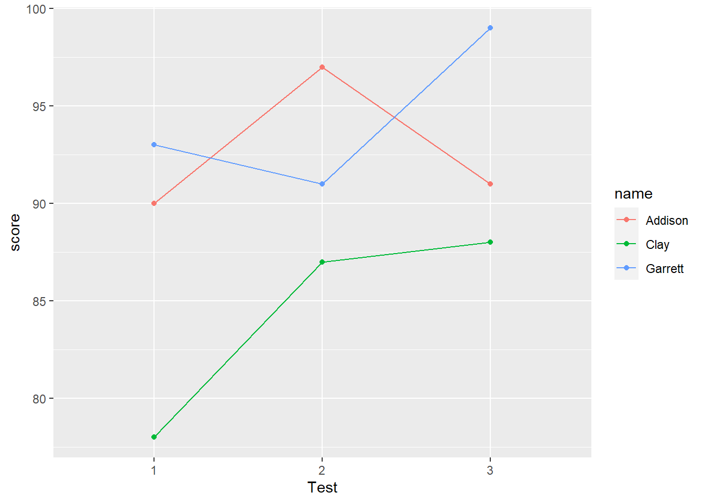

2.5 Data Manipulation
# load packages
library(tidyverse)
library(lubridate)
x <- c(1, 4, 23, 4, 45)
n <- c(1, 3, 5)
g <- c("M", "M", "F")
df <- data.frame(n, g)
df## n g
## 1 1 M
## 2 3 M
## 3 5 Fstr(df)## 'data.frame': 3 obs. of 2 variables:
## $ n: num 1 3 5
## $ g: chr "M" "M" "F"#Similarly
df <- tibble(n, g)
df## # A tibble: 3 x 2
## n g
## <dbl> <chr>
## 1 1 M
## 2 3 M
## 3 5 Fstr(df)## tibble [3 x 2] (S3: tbl_df/tbl/data.frame)
## $ n: num [1:3] 1 3 5
## $ g: chr [1:3] "M" "M" "F"# list form
lst <- list(x, n, g, df)
lst## [[1]]
## [1] 1 4 23 4 45
##
## [[2]]
## [1] 1 3 5
##
## [[3]]
## [1] "M" "M" "F"
##
## [[4]]
## # A tibble: 3 x 2
## n g
## <dbl> <chr>
## 1 1 M
## 2 3 M
## 3 5 F# Or
lst2 <- list(num = x, size = n, sex = g, data = df)
lst2## $num
## [1] 1 4 23 4 45
##
## $size
## [1] 1 3 5
##
## $sex
## [1] "M" "M" "F"
##
## $data
## # A tibble: 3 x 2
## n g
## <dbl> <chr>
## 1 1 M
## 2 3 M
## 3 5 F# Or
lst3 <- list(x = c(1, 3, 5, 7),
y = c(2, 2, 2, 4, 5, 5, 5, 6),
z = c(22, 3, 3, 3, 5, 10))
lst3## $x
## [1] 1 3 5 7
##
## $y
## [1] 2 2 2 4 5 5 5 6
##
## $z
## [1] 22 3 3 3 5 10# find the means of x, y, z.
# can do one at a time
mean(lst3$x)## [1] 4mean(lst3$y)## [1] 3.875mean(lst3$z)## [1] 7.666667# list apply
lapply(lst3, mean)## $x
## [1] 4
##
## $y
## [1] 3.875
##
## $z
## [1] 7.666667# OR
sapply(lst3, mean)## x y z
## 4.000000 3.875000 7.666667# Or, tidyverse function map()
map(lst3, mean)## $x
## [1] 4
##
## $y
## [1] 3.875
##
## $z
## [1] 7.666667# The tidyverse requires a modified map function called map_dbl()
map_dbl(lst3, mean)## x y z
## 4.000000 3.875000 7.666667# Binding
dat01 <- tibble(x = 1:5, y = 5:1)
dat01## # A tibble: 5 x 2
## x y
## <int> <int>
## 1 1 5
## 2 2 4
## 3 3 3
## 4 4 2
## 5 5 1dat02 <- tibble(x = 10:16, y = x/2)
dat02## # A tibble: 7 x 2
## x y
## <int> <dbl>
## 1 10 5
## 2 11 5.5
## 3 12 6
## 4 13 6.5
## 5 14 7
## 6 15 7.5
## 7 16 8dat03 <- tibble(z = runif(5)) # 5 random numbers from interval (0,1)
dat03## # A tibble: 5 x 1
## z
## <dbl>
## 1 0.210
## 2 0.774
## 3 0.559
## 4 0.485
## 5 0.158# row binding
bind_rows(dat01, dat02, dat01)## # A tibble: 17 x 2
## x y
## <int> <dbl>
## 1 1 5
## 2 2 4
## 3 3 3
## 4 4 2
## 5 5 1
## 6 10 5
## 7 11 5.5
## 8 12 6
## 9 13 6.5
## 10 14 7
## 11 15 7.5
## 12 16 8
## 13 1 5
## 14 2 4
## 15 3 3
## 16 4 2
## 17 5 1# use ".id" argument to create a new column that contains an identifier for the original data.
bind_rows(dat01, dat02, .id = "id")## # A tibble: 12 x 3
## id x y
## <chr> <int> <dbl>
## 1 1 1 5
## 2 1 2 4
## 3 1 3 3
## 4 1 4 2
## 5 1 5 1
## 6 2 10 5
## 7 2 11 5.5
## 8 2 12 6
## 9 2 13 6.5
## 10 2 14 7
## 11 2 15 7.5
## 12 2 16 8# with name
bind_rows("dat01" = dat01, "dat02" = dat02, .id = "id")## # A tibble: 12 x 3
## id x y
## <chr> <int> <dbl>
## 1 dat01 1 5
## 2 dat01 2 4
## 3 dat01 3 3
## 4 dat01 4 2
## 5 dat01 5 1
## 6 dat02 10 5
## 7 dat02 11 5.5
## 8 dat02 12 6
## 9 dat02 13 6.5
## 10 dat02 14 7
## 11 dat02 15 7.5
## 12 dat02 16 8# bind_rows() also works on lists of data frames
list01 <- list("dat01" = dat01, "dat02" = dat02)
list01## $dat01
## # A tibble: 5 x 2
## x y
## <int> <int>
## 1 1 5
## 2 2 4
## 3 3 3
## 4 4 2
## 5 5 1
##
## $dat02
## # A tibble: 7 x 2
## x y
## <int> <dbl>
## 1 10 5
## 2 11 5.5
## 3 12 6
## 4 13 6.5
## 5 14 7
## 6 15 7.5
## 7 16 8bind_rows(list01)## # A tibble: 12 x 2
## x y
## <int> <dbl>
## 1 1 5
## 2 2 4
## 3 3 3
## 4 4 2
## 5 5 1
## 6 10 5
## 7 11 5.5
## 8 12 6
## 9 13 6.5
## 10 14 7
## 11 15 7.5
## 12 16 8bind_rows(list01, .id = "source")## # A tibble: 12 x 3
## source x y
## <chr> <int> <dbl>
## 1 dat01 1 5
## 2 dat01 2 4
## 3 dat01 3 3
## 4 dat01 4 2
## 5 dat01 5 1
## 6 dat02 10 5
## 7 dat02 11 5.5
## 8 dat02 12 6
## 9 dat02 13 6.5
## 10 dat02 14 7
## 11 dat02 15 7.5
## 12 dat02 16 8# The extended example below demonstrates how this can be very handy.
# column binding
bind_cols(dat01, dat03)## # A tibble: 5 x 3
## x y z
## <int> <int> <dbl>
## 1 1 5 0.210
## 2 2 4 0.774
## 3 3 3 0.559
## 4 4 2 0.485
## 5 5 1 0.158# Regular expressions -----------------------------------------------------
names <- c("Ford, MS", "Jones, PhD", "Martin, Phd", "Huck, MA, MLS")
# pattern: first comma and everything after it
str_remove(names, pattern = ", [[:print:]]+")## [1] "Ford" "Jones" "Martin" "Huck"# [[:print:]]+ = one or more printable characters
# Reshaping ---------------------------------------------------------------
# Example of a wide data frame. Notice each person has multiple test scores
# that span columns.
wide <- data.frame(name=c("Clay","Garrett","Addison"),
test1=c(78, 93, 90),
test2=c(87, 91, 97),
test3=c(88, 99, 91))
wide## name test1 test2 test3
## 1 Clay 78 87 88
## 2 Garrett 93 91 99
## 3 Addison 90 97 91# Example of a long data frame. This is the same data as above, but in long
# format. We have one row per person per test.
long <- data.frame(name=rep(c("Clay","Garrett","Addison"),each=3),
test=rep(1:3, 3),
score=c(78, 87, 88, 93, 91, 99, 90, 97, 91))
long## name test score
## 1 Clay 1 78
## 2 Clay 2 87
## 3 Clay 3 88
## 4 Garrett 1 93
## 5 Garrett 2 91
## 6 Garrett 3 99
## 7 Addison 1 90
## 8 Addison 2 97
## 9 Addison 3 91# mean score per student
aggregate(score ~ name, data = long, mean)## name score
## 1 Addison 92.66667
## 2 Clay 84.33333
## 3 Garrett 94.33333aggregate(score ~ test, data = long, mean)## test score
## 1 1 87.00000
## 2 2 91.66667
## 3 3 92.66667# line plot of scores over test, grouped by name
ggplot(long, aes(x = factor(test), y = score, color = name, group = name)) +
geom_point() +
geom_line() +
xlab("Test")
#### reshape wide to long
pivot_longer(wide, test1:test3, names_to = "test", values_to = "score")## # A tibble: 9 x 3
## name test score
## <chr> <chr> <dbl>
## 1 Clay test1 78
## 2 Clay test2 87
## 3 Clay test3 88
## 4 Garrett test1 93
## 5 Garrett test2 91
## 6 Garrett test3 99
## 7 Addison test1 90
## 8 Addison test2 97
## 9 Addison test3 91# Or
pivot_longer(wide, -name, names_to = "test", values_to = "score")## # A tibble: 9 x 3
## name test score
## <chr> <chr> <dbl>
## 1 Clay test1 78
## 2 Clay test2 87
## 3 Clay test3 88
## 4 Garrett test1 93
## 5 Garrett test2 91
## 6 Garrett test3 99
## 7 Addison test1 90
## 8 Addison test2 97
## 9 Addison test3 91# drop "test" from the test column with names_prefix argument
pivot_longer(wide, -name, names_to = "test", values_to = "score",
names_prefix = "test")## # A tibble: 9 x 3
## name test score
## <chr> <chr> <dbl>
## 1 Clay 1 78
## 2 Clay 2 87
## 3 Clay 3 88
## 4 Garrett 1 93
## 5 Garrett 2 91
## 6 Garrett 3 99
## 7 Addison 1 90
## 8 Addison 2 97
## 9 Addison 3 91#### reshape long to wide
pivot_wider(long, name, names_from = test, values_from = score)## # A tibble: 3 x 4
## name `1` `2` `3`
## <chr> <dbl> <dbl> <dbl>
## 1 Clay 78 87 88
## 2 Garrett 93 91 99
## 3 Addison 90 97 91# using the names_prefix argument lets us prepend text to the column names.
pivot_wider(long, name, names_from = test, values_from = score,
names_prefix = "test")## # A tibble: 3 x 4
## name test1 test2 test3
## <chr> <dbl> <dbl> <dbl>
## 1 Clay 78 87 88
## 2 Garrett 93 91 99
## 3 Addison 90 97 91The verbs of data manipulation
- select: selecting (or not selecting) columns based on their names (eg: select columns Q1 through Q25)
- slice: selecting (or not selecting) rows based on their position (eg: select rows 1:10)
- mutate: add or derive new columns (or variables) based on existing columns (eg: create a new column that expresses measurement in cm based on existing measure in inches)
- rename: rename variables or change column names (eg: change “GraduationRate100” to “grad100”)
- filter: selecting rows based on a condition (eg: all rows where gender = Male)
- arrange: ordering rows based on variable(s) numeric or alphabetical order (eg: sort in descending order of Income)
- sample: take random samples of data (eg: sample 80% of data to create a “training” set)
- summarize: condense or aggregate multiple values into single summary values (eg: calculate median income by age group)
- group_by: convert a tbl into a grouped tbl so that operations are performed “by group”; allows us to summarize data or apply verbs to data by groups (eg, by gender or treatment)
- the pipe: %>%
- Use Ctrl + Shift + M (Win) or Cmd + Shift + M (Mac) to enter in RStudio
- The pipe takes the output of a function and “pipes” into the first argument of the next function.